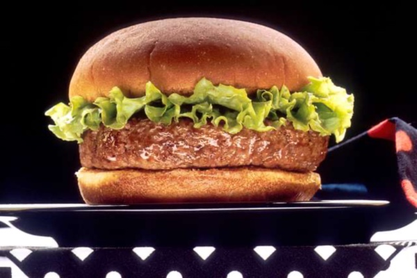

Home
Burger

Description
A staple of the american diet, I've always loved a good burger. Endlessly customizable, always a classic.
This recipe is for a grilled burger patty, from All Recipes.
Ingredients
- 1 large egg
- ½ teaspoon salt
- ½ teaspoon ground black pepper
- 1 pound ground beef
- ½ cup fine dry bread crumbs
Steps
- Preheat an outdoor grill for high heat and lightly oil grate.
- Whisk egg, salt, and pepper together in a medium bowl.
- Add ground beef and bread crumbs; mix with your hands or a fork until well blended.
- Form into four ¾-inch-thick patties.
- Place patties on the preheated grill. Cover and cook 6 to 8 minutes per side, or to desired doneness. An instant-read thermometer inserted into the center should read at least 160 degrees F(70 degrees C).
- Serve hot and enjoy!